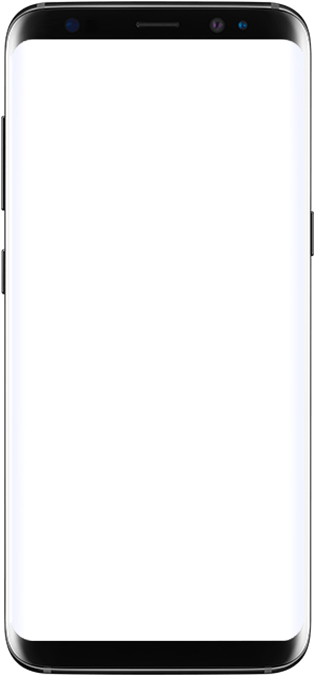
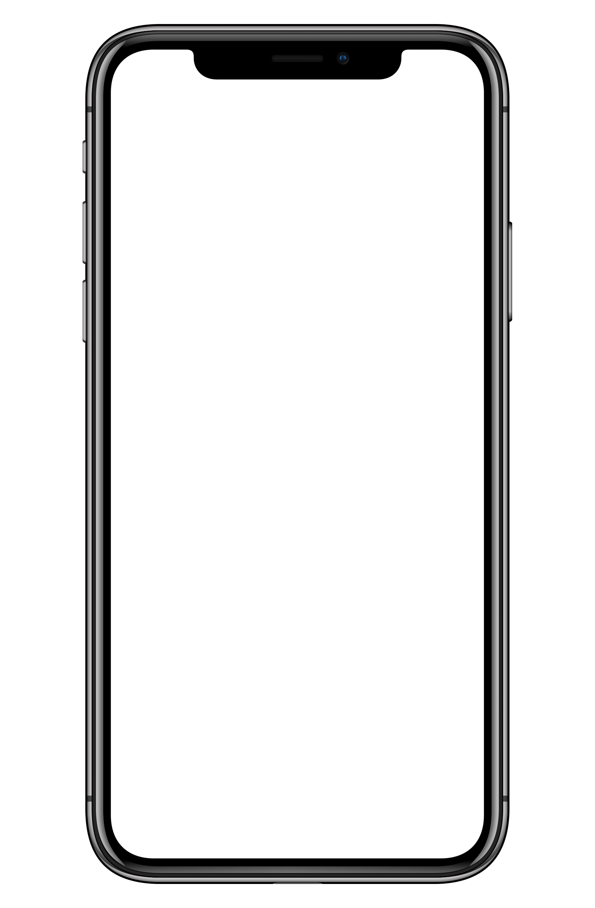
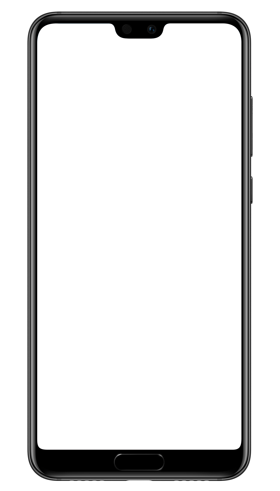

Op deze website kan u zien of u genoeg geld hebt om een nieuw smartphone wel of niet te kunnen kopen.
Hieronder zal je een overzicht zien van 3 verschillende smartphones waaruit u zal kunnen kiezen.
| Samsung Galaxy S10 | iPhone 11 Pro | Huawei P30 Pro |
|  |  |  |
De Galaxy S10 is een sterk high-end toestel. Hij heeft een groot scherm ten opzichte van het formaat van de behuizing en om dat te bereiken heeft hij een gat in het scherm waar de frontcamera achter zit. Verder heeft hij een prima vingerafdrukscanner achter het kwalitatief hoogstaande oledscherm en is het camerasysteem een stuk veelzijdiger dan dat van zijn voorganger en van goede kwaliteit, hoewel de primaire camera van Samsung op sommige vlakken is voorbijgestreefd door de beste smartphones in deze prijsklasse.
De iPhone 11 Pro is samen met de iPhone Pro Max de meest high-end Apple-smartphone van 2019. Ten opzichte van voorgangers XS en XS Max hebben ze een veel betere accuduur en ook de camera is er behoorlijk op vooruit gegaan, vooral bij slechte lichtomstandigheden. Ook zit er zowel een telelens, als een ultragroothoeklens op en dat is praktisch. We worden ook erg blij van het oledscherm en natuurlijk de krachtige hardware. Het grootste nadeel is nog steeds de prijs, want je betaalt niet alleen veel voor de variant met een magere 64GB opslaggeheugen, maar ook veel extra als je meer opslag wilt.
Het toptoestel van Huawei heeft een ronduit fantastische camera en een erg goede accuduur. Ook het gebogen oledscherm en de stevige, waterdichte en ergonomische behuizing mogen er zijn, maar de camerabobbel is wel wat aanwezig. Het snelle 40W-bedraad en 15W-draadloos laden zijn nog een paar pluspunten van dit toestel. Helaas mist de telefoon wel een 3,5mm-poort en kiest Huawei ervoor om de schermgrootte dermate te maximaliseren dat er geen oorluidspreker meer op het toestel past, met monogeluid als gevolg.